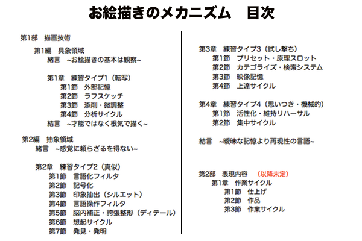
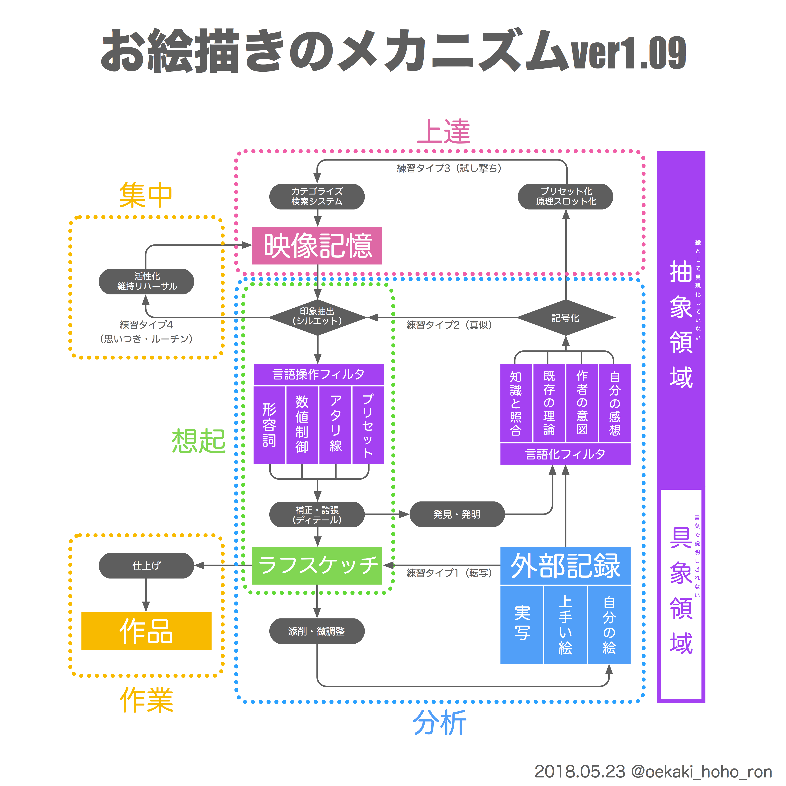
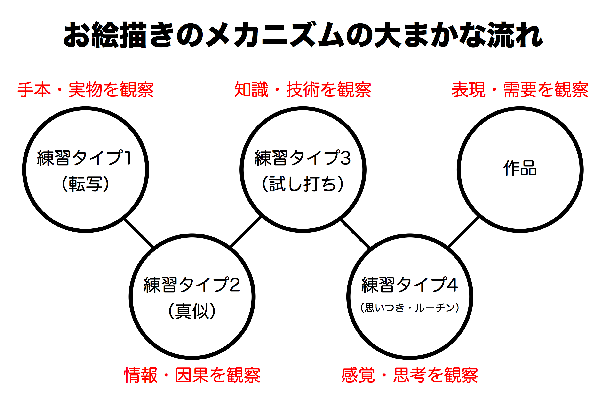
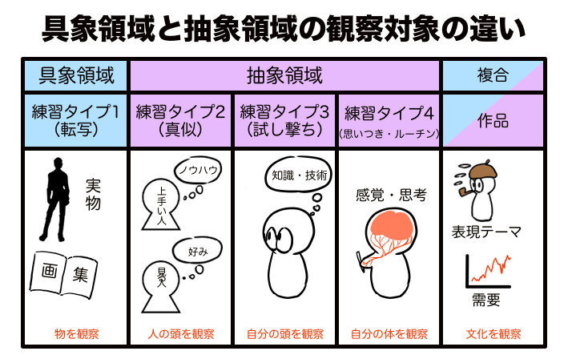
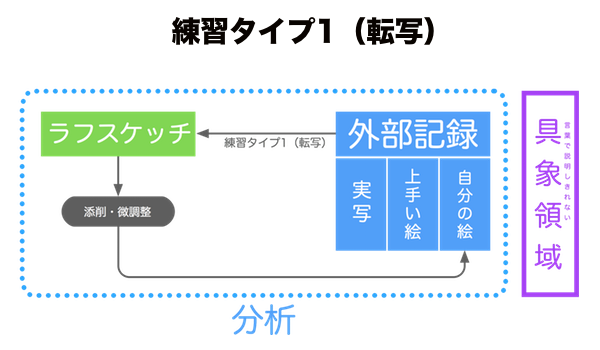
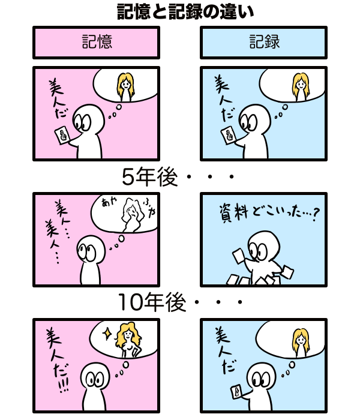
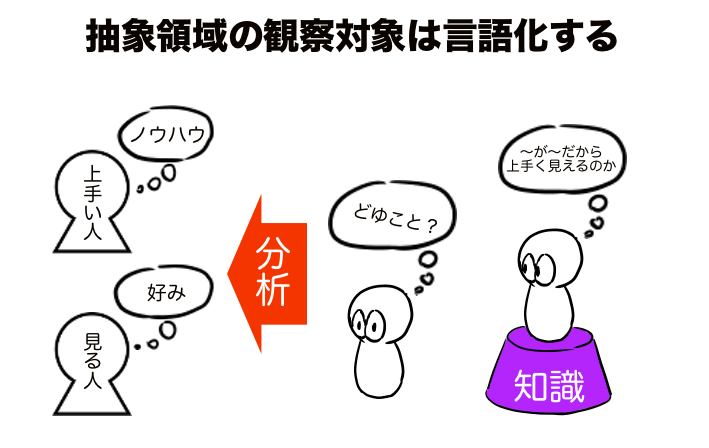
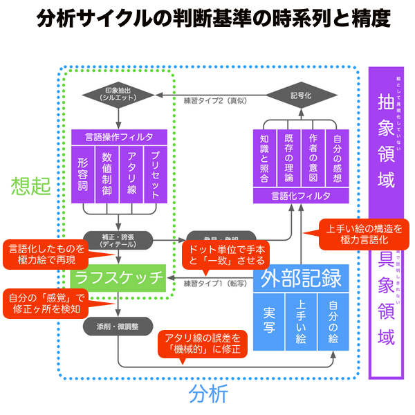

以前からTwitterの方で結構考察してた「お絵描きのメカニズム」をそろそろまとめないといけないということで、自分で実験してたどり着いた地点までを文章にしました。今回の記事ではお絵描きのメカニズムを部分的に解説しています。残りは数回に分けて文章化していくつもりですが、今回の掲載範囲がお絵描きの基本だと思うので十分役立つと思います。
ところで、文章化するにあたって色々と補足勉強をしていく過程で、お絵描きのメカニズムの上位互換となりそうな理論に出会ってしまいました。そのため、この執筆が終わり次第お絵描きのメカニズムをverアップさせるつもりです。とりあえずは上位互換の理論の影響を受ける前の独自研究の集大成としての文章化作業となります。

第1部 描画技術
まえがき~確実に上達する練習方法
絵とは平面に描かれた色ドットの配列で、これはアナログだろうとデジタルだろうと同じです。光の反射をフィルムに焼き付ける写真が記録媒体だとすると、紙やキャンバスやディスプレイという平面上に並んだ色のドット配列から空想するというのが絵という媒体の本文です。絵を描くのに必要な要素を大まかに挙げると「表現技術」と「描画技術」があります。
表現技術とは、実在するものや空想物を組み合わせることによって作者が考えていることを再現するもので、再現精度であったり、鑑賞者がその絵から何を想起したかという結果から評価できます。描画技術とは、単にドットの配列を平面上に構築するための手段であって、実在するものであろうと空想物であろうと描画する工程は同じで、一般的には実在してそうなリアリティ（質感）が強ければ上手いと評価されます。そうすると、抽象画を除くお絵描きにおいて表現技術は描画技術あって初めて鑑賞に耐えうるものとなり、つまり初心者はまず描画技術について学ぶ必要があるということです。表現したいものあっての創作のモチベーションではありますが、絵として形にする前のただの妄想であれば初心者でも訓練せず自由に行えますし、それだけで十分モチベーションとなり得ます。とにかくまずは描画技術を身につけるべきです。

お絵描きが上手くなるために才能は必要ありません。客観的な上手下手は、絵を見た人が「実在するモチーフ」を判断基準に評価するので（好き嫌いは主観的）、最終的に辿り着く「べき」完成図の幅は狭いです。最終的な目的地がある程度決まっているなら取るべき行動は限られるはずなのになかなか絵が上手く描けないのは、単純に脳の処理速度や記憶容量が足りないためです。
例えるなら、単調なジグザグ一本道の細道を時速100kmで走りながらハンドリングするとして、それなりの反射神経や緻密さがないと脱線してしまいます。反射的に行動しないといけないのに見知らぬ道だと判断が遅れるし、長時間走り続けると疲れます。せめて事前に地図を用意して計画を立てる位はすべきです。地図は何度見ても正確に同じ道筋を標してくれるし、同じ道を何度も練習すればハンドルを切るタイミングも覚えられます。取るべき行動がある程度特定できれば、後はそれを何度も繰り返して比較しながら改善し、そのうち慣れて上達できます。
ドライブからお絵描きに話を戻して、お絵描きの地図として「お絵描きのメカニズム」というものを考案しました。これは客観的に上手いと言える絵を描くために必要な要素をフローチャートにしたものです。各要素の位置で何を考えて何を学べばいいのか、そこを曖昧にせず確実に達成していけば誰でも絵の上達は可能です。作者は自分の表現したいことを見た人に伝えるため、表現内容を構成するために実在するモチーフを的確に描いて、正しく情報を積み上げれば見た人は作者の意図通りのイメージを想起するはずです。独創性は客観的に評価できないため不要で、だからこそお絵描きの上達に才能は必要ないと考えています。

第1編 具象領域
緒言~お絵描きの基本は観察
描画作業の最も簡単なものは、手本画像のドットの配列を別の紙にそっくりそのまま再現する「転写」です。絵の練習方法として「模写 reproduce」することは有効ですが、それをさらに客観的・機械的にしたものが「転写 copy」です。初心者はまだ絵を描く感覚が鍛えられていないため要領が悪く、模写といいつつも先入観で都合よく補正して楽をする可能性があります。それを転写ということによってドット配列の完全一致という模範解答を明確化し、練習精度の評価基準を設定できます。人間がプリンターのように正確に迅速にドット配列をコピーできるわけではないので、何度も手本を見ながら慎重にスケッチしていくことになります。そして描いた絵と手本の相違点を探して微調整することで可能な限り精度を高めるようにします。この作業はひたすら手本を観察することでしか達成できません。
お絵描きのメカニズムに組み込まれている練習タイプは１~４まであり、練習タイプ1（転写）から入門し、練習タイプ2（真似）で技を学び、練習タイプ3（試し撃ち）で熟練させ、練習タイプ4（思いつき・機械的）で再現性を維持するという構成になっています。それぞれ練習目的に対応するものを観察することでトレーニングとしての効果を発揮します。練習タイプ1（転写）は外部記録の様々な手本を観察するもの、練習タイプ2（真似）は外部記録のうまい絵を観察するもの、練習タイプ3（試し撃ち）は習得した技術や知識の効果を観察するもの、練習タイプ4（思いつき・機械的）では自分の感覚や思考を観察するものです。

この中でも練習タイプ3と練習タイプ4は言語や映像記憶といった物理的に存在しないものを観察する練習方法なので難易度が高いです。一方で練習タイプ1と練習タイプ2は外部記録から手本を選んでそれを見ながら描くという極めて物理的な観察が可能な練習方法です。言語や記憶を認識するには訓練が必要ですが、写真や絵を認識するのはひたすら見るだけで十分です。

ちなみに、「転写」には模範解答があると言いましたが、「真似」の模範解答は設定しにくいです。真似をするにはまず上手い絵を物理的に観察するわけですが、実は観察すべきは作者の思考過程なのです。人の絵から学ぶわけですから憶測でもいいのでまず作者になりきって、なぜこの様な描き方をしたのか読み取る必要があるので「真似」は「転写」に比べ少し難易度が高いです。だからお絵描き初心者はまず練習タイプ1（転写）から始めるといいです。
第1章 練習タイプ1（転写）
第1節 外部記憶

「記憶」は抽象的なもので、しかも人の感情によって勝手に改ざんされ続けるものです。それはそれで新しい表現を生み出す可能性はありますが安定感がなく、一度いい感じの絵が描けたとしても二度目に活かせないものです。「記録」は物理的に残すもので、見ようとすれば細部まで観察できますし、半永久的に改ざんされることがないものです。
「記憶」は脳の中にあるものなので管理は手間いらずですが、それを閲覧するには対象の記憶を活性化させる必要があるので眺めるように巡回することは難しいです。「記録」は記憶として脳内に保管するために変換（脳にbitは入らない）する必要があり、閲覧するためには物理的に保管場所に到達して視認する必要がありますが、管理システムさえ整えればどの記録もピンポイントで検索したり、比較するために並べて眺めたりできるようになります。このように、瞬時に呼び出すためにデータ容量を削ぎ落とした記憶に対し、データの原本そのものを管理する記録は、原点回帰や比較観察するためには必須となります。

外部記録の管理方法は人それぞれで結構です。実写はおそらくポーズ集や画像フォルダとしてあつかうでしょう。それらを整理しておくというはイメージできると思います。上手い絵は画集やSNSや映像作品などで、いつでも見られるよう、比較できるようシステムを構築する必要があります。
自分の絵は、成長記録や覚書として活用しますが、管理方法は人それぞれです。スケッチブックに書き残したり、スキャンしてPDFで管理したりできます。練習を重ねるほど量が増えるのでPDFにしてクラウドサーバーに保管しておくとスマホで見たりできて便利です。筆者は透視図法の研究の際にはTwitterモーメントにまとめたりしているので、その当時の思考内容も文章で残せて便利です。あと日付や練習タイトルの記載を癖づけることです。あとで見返したときに何を考えてこのように描いたのか思い出せます。記録だけでは情報が少なくても、記憶と掛け合わせることで鮮明な情報として再構築できるので脳とはおもしろいです。
第2節 ラフスケッチ
ラフスケッチとは描画作業の一時的な完了工程のことです。練習の度にラフスケッチとして描いた絵を基準にして課題を設定して改善していくことになります。また、練習タイプ1では転写することが目的なので、ラフスケッチと外部記録がドット単位で完全一致することが理想です。外部記録の中から参考画像を選んで、できる限り同じ絵になるように描き写す練習なので、シルエットが完全一致する以上の成功はありません。また、初心者が最初に転写の練習をすることの意義として、 一度も描いた（観察した）ことのないものは映像記憶や意味記憶として保有されていないため何も見ずにスケッチすることは不可能で、まずはリアリティ（質感）の構造を「知る」ためには見ながら描くしかないというものもあるので、まずはラフスケッチを1枚描いてみるところからお絵描きのメカニズムが機能し始めます。
お絵描きのメカニズムに沿って行う練習では、たとえ転写以外の練習であったとしても「上手いかどうか」は気にせず手本と「同じかどうか」だけ気にすればいいです。何度も言いますが、「上手い」とは客観的な評価であって、実在するモチーフを連想させるリアリティがあるかどうかのみで判断されます。故に、すでに上手いことが保証されている手本を正確に転写することで擬似的に上手い絵を描くことができるわけです。何故上手いと感じられるかという根拠の分析はとりあえずは触れなくて結構です。

「上手くなる」ためには、基、「上手いと評価される」ためには、リアリティの構造を維持しつつ無駄な情報を省いた描き方をしている上手い絵の構造（記号の組み合わせ）を「知る」こと、そしてそれを安定して再現する描画技術を「覚える」ことです。そのためには、手本という絶対的な模範解答から相対的に生成されたラフスケッチがどの程度「同じかどうか」逆に言えばどの程度「相対的に異なるか」を評価し、次に描くときにはその誤差の範囲内に収めることにだけ気をつけるだけで十分です。あとはその誤差を機械的に修正する手段をとれば、狙い通りのヶ所を必要な量だけ上達できるようになります。「知った」「覚えた」ことだけで機械的に絵の上達がしたいなら、ラフスケッチに嘘や見栄や先入観などという不純物を持ち込まないようにしましょう。
ちなみに、練習タイプ2（真似）以降のように「上手い絵の構造」という抽象的なものを学び始める工程では、「同じかどうか」を判断するのは難しく感じると思います。しかし、物理的に視認できる観察対象と違って、抽象物は言語化して認識するものなので、練習の過程で知識が蓄積されれば言語によって「同じかどうか」の判断が可能となります。難しさゆえにここの言語化の過程で語弊を生んでしまっても、その言語化の誤差はドットの誤差と同義（相互変換可能）なので相対的な評価と機械的な修正を行うだけです。どの工程であれラフスケッチは、目標としているリアリティや上手い絵の構造の再現度を客観的に評価するために必要な工程です。そして厳正な客観的自己評価の済んだ「構造の分析履歴」というデータが添付されたラフスケッチが外部記録に保管されるという流れになります。

第3節 添削・微調整
人間に完璧な転写は不可能なので、外部記録から手本を選んで紙に書き写した絵は、手本に比べて確実にクオリティが下がっているはずです。下がったのならどこかに悪い部分が発生しているはずで、その悪いところがどう悪いのか考えて描き直すのが添削・微調整です。とはいえ転写したからにはそれなりには手本と近いはずで、もしそれが全くできてないとしたら練習失敗ということです、再度第一歩目からがんばりましょう。
もしそれなりに転写できたなら、転写しきれていない部分を感覚（好み）に頼って自分が欲しかった印象に近づける必要があります。感覚に頼ると言うとそんな曖昧でいいのかと思うかもしれませんが、感覚に頼って描き直すという意味ではなく、どこを最優先で修正すべきか、どの部分から修正するのが効率的か、という判断を下すのは感覚に頼るしかない、というだけの話です。結局は全ての違和感を総当たりで検証すれば済みますし、判断ミスをしても効率に差が出るだけなので心配無用です。また、感覚に頼るということは模範解答である手本に頼らないということで、手本との相対誤差を検証する前に、その誤差に着目する重要度を測るといった、描画技術ではなく計画性に関わる工程とも言えます。もう少し具体的に言うと、その手本を選んだからにはその手本の「上手い絵の構造」から受け取った印象を再現したいと思ったからで、その上手い絵の印象の再現を邪魔している最大原因（不快感）を検知する行為を指しています。これはいわばラフスケッチを自分の好みだけで評価することが許される唯一の瞬間でもあるので、場合によっては手本をそのまま添削してみるのも良い練習になりますが、そのように手本にダメ出しするのは練習タイプ2以降でそこそこ知識を身につけてからにするのが無難です。ちなみに、感覚や好みで判断してもいいとはいうものの、作者としての自分の願望の一切を排除し、あわよくば批判してやろうという観客としての自分の感覚や好みで判断することを徹底すべきです。頑張って描いた、いつもより調子が良い、など観客は興味ありません。

さて、ラフスケッチの「どこを直すか」は感覚で選んでも構いませんが、「どうやってどのように直すか」は機械的に行います。それはどのようなアタリ線を描く（利用する）かで大体決まるものです。アタリ線とは、言い換えればガイド線とも呼べるものです。普通なら手描きのアタリ線は一度描いたらそれで使用済みと思うかもしれませんが、実は終始、どころか添削された次の絵にまで引き継がれるだけの情報を保有しているものです。一度目に描いた絵に納得いかなければ添削工程に進みますが、例えば転写してみたはいいけど頭身の比率がおかしいときは長さを変え、体のひねりが足りない時は正中線をずらします。このように微調整は絵の全体を見ながら全ての修正箇所を同時にやるのでは扱う情報量が多過ぎて精度が悪いため、直すべき部分をピンポイントに攻めるべきです。そこで微調整の基準としてアタリ線に着目し、アタリ線の長さを調整したり軸をずらしたりして全体の印象が相対的にどう変化するかを検証します。ちょうど3DCGのモデリングで立体形状を修正していく感覚です。アタリ線は3DCGにおけるワイヤーフレーム表示の状態と同じ機能を持っています。
また、アタリ線を基準に微調整していく方法であれば修正内容を言語化できるという利点もあります。長さを変える、移動する、傾けるなど、前回のラフスケッチからどこをどう変えたかという履歴を言語化できます。こういった修正履歴のデータを整理したものが「外部記録」であり、外部記録をアップデートする工程が「添削」です。ここを面倒がっていては気づけるはずだった有益な情報をスルーしてしまいます。特に同じ絵を描き直すという行為は、冗長に感じて刺激が少なく面白みに欠けますが、とにかく何度か描いてみないと比較ができません。それに自分がどういった誤作動を起こしやすいのかを明確にして対策しないとデバッグできないという理由もあります。添削はその名の通り作品と思考のデバッグ作業なのです。

第4節 分析サイクル
独学とはひたすら分析です。もし教師がいたなら自分はぼーっとしていても優しく(?)思考過程を示しつつ結論をも与えてくれます。質問すれば軌道修正もしてくれます。ですが本や作品から独学で絵を学ぼうとすると、そこにある視覚情報以上の情報を与えてくれないものです。手本にした作者の思考をトレースしたくても憑依でもしない限り知ることはできないので、自分で掘り下げたり、連結したり、情報をサルベージして仮説を立てる努力をしなくてはいけません。そうするとお絵描きを独学するためにできることは、外部記録を転写や真似などしたものを添削するという工程を何度も繰り返し、少しずつ情報量を増やしたり、模範解答を探り当てたり、独自の解釈を捻出して徐々に知識体系を発展させていく他ありません。解釈を補強するための情報量を増やす、新しいアイデアを取り入れる、というのが分析サイクルです。
練習タイプ1（転写）では、「リアリティの構造」のように観察対象の表層を物理的に視認できる範囲での描画でしたが、次の工程の練習タイプ2（真似）では、「上手い絵の構造」のように人間の感覚を喜ばせる仕組みをいかにして組み込むかを学びます。上手い絵の構造に関する情報を分析するには、明確な意図を込めて描く側の「作者」の視点と、その逆の立場にあたる、快感を得るために見る側の「鑑賞者」の視点という、双方の視点に立つようにします。このときの「作者の視点」を設定するのは外部記録の手本であり、「鑑賞者の視点」となるのは添削・微調整の説明で注意深く取り上げていた自分の感覚です。
ところが、作者の視点に立っているうちは作者が作品に込める意図は言語で考えることができますが、観客が作品を見て体験する感動や快感という感覚は言葉にできないものであり、両者の視点に立つことを同時に行うことは不可能であるという問題が発生します。なぜなら、仮に客観的に評価しながら絵を描こうとしても、脳内にある映像記憶は曖昧なため客観視することは難しく、客観的に鑑賞するには一旦はラフスケッチに描き出す必要があります。そして紙の上に具現化された絵を改めて分析したときに自然と言語で認識するわけですが、このときに言語化するより以前に感じられる言葉にできない感覚が鑑賞者の視点にあたるものです。つまり、様々な思考を巡らせながらラフスケッチを描いた「後」に、達成感や自己満足を排除してラフスケッチを鑑賞した「瞬間」の自身の心理から観客の感覚にあたるものを捻出し、それを「次」のラフスケッチに活かすために言語化するという流れになるので、そもそも時系列に前後関係が発生しています。分析サイクルというものはこれまでの分析で解明してきた「作者の意図」を真似して「上手い絵の構造」を再現した結果「観客の感覚」に与えた影響が狙い通りであったかどうか、という実験と結果と考察が1セットである必要があります。

もう少し具体的な説明をしてみましょう。例えば、ジェットコースター好きな人がいたとします。スリルを味わいたくて何度も乗ることと、過去に乗ったときのスリルを思い返すことと、ジェットコースターに対する愛は同じでも得られるものは別のものでしかありません。スリルを思い返して得られるものは、あのスリルは急降下するときの三半規管の刺激によるものだとか、不安定な高い場所にいるという非現実的な状況が原因だ、という知識だけです。実際にそのスリルを共感して貰いたいとなら体験談を熱弁するのではなく、あなたの友人の脚をゴムで縛って高い所から突き落とすしかありません。とはいえ、ゴムで縛って突き落とすという発想に至ることができたのは、スリルの根拠を分析して構成要素を特定したお陰です。スリルを人に伝えられる技術を身につけるには、まず自分でスリルを体験すること、そのスリルの構造を解明すること、そのスリルを再現する方法を編み出すことです。

しかしながら、実験と結果と考察を1セットで分析した場合、それに終わりがありません。手本の上手い絵の構造と完全一致するまでは、ラフスケッチを生成した瞬間に修正ヶ所が判明し、それを修正するために新たなラフスケッチを生成した瞬間に修正ヶ所が判明し.....とエンドレスな分析行為に苛まれます。分析サイクルの終わりがあるとすれば、それはラフスケッチが手本を上回った時、勝手に自己満足したとき、くらいのものです。現実的に考えて手本と完全一致するなんてことはあり得ないため、分析サイクルには終わりというものは存在しないのでしょう。ただ、完全一致でないにしても、合格点の設定はできるはずです。合格点という課題達成の基準の設定は「自分がどんな絵を描こうとしているのか」によります。せめてその合格点に到達できるよう、お絵描きのメカニズムで設定した模範解答や評価基準に従って分析精度を確保しておき、分析サイクルを繰り返すほど確実にゴールに近づくことで苦行の終わりを早めることはできます。よく耳にする話で、絵が上手くなりたいならとにかくいっぱい描くことだと言われますが、数をこなす練習とは無心に描きまくることではなく、拾いきれなかった情報を何度も拾いにいく分析の努力という意味です。
下のツイートは、分析サイクルで「数をこなす練習」をするとはどういうことかを言語化するために実際に行った実験の記録です。修正を重ねるごとに違和感の原因が絞られていき、最終的に正中線をずらせばいいということに気づいています。後から思考過程を辿れるように細かくメモを取っているので、興味があればツイートのスレッドを眺めてみてください。
結言~才能ではなく根気で描く
お絵描きが難しいと思われるのは才能が必要だと思われているからですが、一言に上手い絵と言っても評価基準は様々なので、自分がどんな絵を描こうとしているのかを明確にするところから見直すべきです。リアルなのが良いのか、スタイリッシュなのが良いのか、描き込みが多いのが良いのか、方向性によって積み上げるべき情報も異なります。そして積み上げる情報とは分析サイクルの中で記号化したもので、記号化されているので再現性が高く、自分の絵の方向性に沿って記号を選択していきます。選択するのに才能は必要ありません。
ただし記号を使って絵を描くのは練習タイプ2（真似）で抽象的な観察が行えるレベルになってからです。まずは完全な初心者は練習タイプ1（転写）でドット配列を機械的に転写して、そうして覚えた形状を組み合わせるという手段で絵を描くことで、一応それだけで客観的に見て上手い絵は描けます。これは重要なコンセプトの一つですが、お絵描きのメカニズムの「描画技術」の項目では、お絵描きの才能（独創性）が必要となる部分については一切触れないことを徹底しています。独創性というのは、何を表現すれば面白くできるかというアイデアの話なので、描画技術の練習でどうにかできるものではないです。独創性は表現技術の領分なので、とりあえずは才能の類は外部記録の上手い絵にアウトソーシングしておけばいいです。
強いて言えば、初心者がまずやるべき練習タイプ1（転写）での目的は環境構築です。環境構築といっても身の回りの整理整頓ではなく、お絵描きのメカニズムを導入するための思考の互換性の獲得ということです。環境構築は知識さえあれば全く同じ状態を再現できるものなので、練習タイプ1では模範解答や評価基準といった絶対的な目標が設定されているので再現性は確保されています。模範解答があるうちに思考を安定させ、後に備えるというわけです。
些細な問題ですが、この環境の初期設定を完了するまでが少し面倒かもしれません。パソコンの設定に例えると、初心者がインターネットの接続設定をしようとするとかなり悩むと思いますし、場合によっては設定方法を一日中調べ続けても上手くいかない可能性もありあます。その時必要なのは根気です。才能というか、勘が良ければすぐに解決するかもしれませんが、辿るべきフローチャートが決まっているなら勘が悪くても根気で乗り越えることが可能です。お絵描きもまずは転写することを覚えれば最低限の描画技術が身について次のステップに進めるので、自身を機械と捉えてお絵描きのメカニズムをインストールするための互換性のある環境構築を行う根気を保ってください。
今回のまとめ


哲学者カントの『純粋理性批判』は面白いですよ。これが初めに言っていた「お絵描きのメカニズム」の上位互換理論なのですが、『純粋理性批判』はいわゆる認識論を扱う学問です。人間は何を認識できて、どう解釈するのか、という絵を描くことについて少しでも考察したことある人なら触れたことのある疑問を見事に解明しています。お絵描きのメカニズムを研究するために自分で行った実験でたどり着いた仮説がある程度一致していたのでこれは読まずにはいられないと。『純粋理性批判』は「お絵描きのメカニズム」の描画技術に属する分析サイクルと上達サイクルの理論を補強してくれそうなので期待大です。さらに『実践理性批判』という著書では表現技術が関係ありそうです。原著はちょっと値が張るし難しいので、まずは解説本から入門するといいかもです。